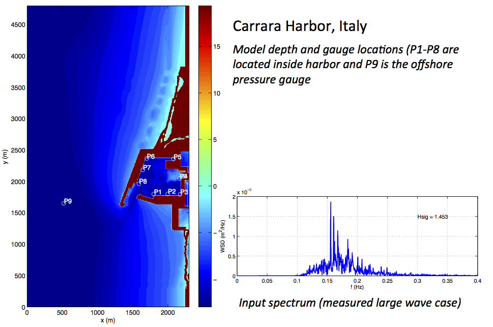
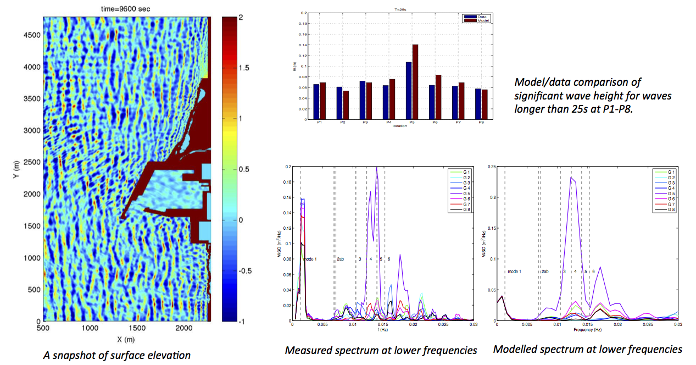

Carrara, Itly, Harbor Resonance
¶
Source: CHL, HR Wallingford benchmark report


Related Topics
Documentation overview
ADDITIONAL INFORMATION
Useful links
Previous:
2011 Tohoku-Oki tsunami impact in Crescent City, CA harbor
Quick search